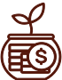

QUEM SOMOS
A SEEDS tem como objetivo primordial mudar a vida dos seus clientes administrando com uma abordagem exclusiva e inovadora o seu patrimônio, promovendo crescimento e sustentabilidade ao longo do tempo.
A empresa orgulha-se pela metodologia única, que preza o atendimento personalizado e próximo com cada investidor, que no decorrer da consultoria desenvolve maior conhecimento sobre o mercado de capital. Como resultado, o serviço oferecido transcende a relação profissional e impacta de forma positiva o estilo de vida, trazendo mais equilíbrio, segurança e tranquilidade com relação ao futuro.
Esse contato contínuo, com comunicação transparente entre ambas as partes, permite que a equipe SEEDS elabore uma estratégia de investimento sob medida, consequência de uma criteriosa análise e compreensão aprofundada do perfil, objetivos e necessidades do seu cliente. Dessa forma é class="std-div"possível otimizar resultados e garantir um controle efetivo de riscos.
Tudo isso é possível devido ao estudo contínuo e análise minuciosa das empresas que fazem parte do mercado financeiro que são selecionadas cuidadosamente de acordo com seus fundamentos e estratégias de destaque, além das demais opções disponíveis no sistema de investimento brasileiro.
Estamos dedicados a ser o seu parceiro no caminho para o sucesso financeiro, administrando o seu patrimônio de forma diligente e eficiente e te introduzindo para o SEEDS Financial Lifestyle.
Nossos produtos
RENDA FIXA
A Carteira de Renda Fixa é specialmente projetada para investidores que buscam estabilidade e preservação de patrimônio. Ideal para pessoas com perfil buscam abordagem segura e com mais conservador previsível para o crescimento do seu patrimônio.
Características Principais:
Segurança em Primeiro Lugar Investimento em títulos de renda fixa de baixo risco, proporcionando estabilidade e proteção contra volatilidades do mercado. Retornos Constantes Geração de renda regular por meio de pagamentos de juros, proporcionando um fluxo de caixa estável. Perfil do investidor Adequado para investidores nível conservador alto que buscam equilibrar crescimento moderado com segurança.
Cobrança:
A taxa de gestão é competitiva e transparente, com equilíbrio entre as práticas da Seeds e os interesses dos nossos clientes. Não há taxas embutidas e/ou surpresas. Apenas o compromisso claro com o sucesso financeiro do investidor. Ressalta-se que somente haverá a cobrança da Seeds se houver rentabilidade para o cliente.
RENDA VARIAVEL
A Carteira de Renda Fixa é specialmente projetada para investidores que buscam estabilidade e preservação de patrimônio. Ideal para pessoas com perfil buscam abordagem segura e com mais conservador previsível para o crescimento do seu patrimônio.
Características Principais:
Segurança em Primeiro Lugar Investimento em títulos de renda fixa de baixo risco, proporcionando estabilidade e proteção contra volatilidades do mercado. Retornos Constantes Geração de renda regular por meio de pagamentos de juros, proporcionando um fluxo de caixa estável. Perfil do investidor Adequado para investidores nível conservador alto que buscam equilibrar crescimento moderado com segurança.
Cobrança:
A taxa de gestão é competitiva e transparente, com equilíbrio entre as práticas da Seeds e os interesses dos nossos clientes. Não há taxas embutidas e/ou surpresas. Apenas o compromisso claro com o sucesso financeiro do investidor. Ressalta-se que somente haverá a cobrança da Seeds se houver rentabilidade para o cliente.
Nossos gestores
Raphael A C Andrade
O Rapha, é engenheiro e administrador com mais de 15 anos de experiência em consultoria financeira, gestão de carteiras administradas e gestão de grandes fortunas. Sua atuação também engloba experiência com foco em gestão financeira e patrimonial, comercial e gestão de custos. Como consultor atuou em empresas de variados segmentos da indústria de energia, de logística e de tecnologia e como influenciador de finanças impactou mais de 350.000 pessoas ao longo de sua carreira. É um dos sócios fundadores da Seeds Invest e o líder da área de renda fixa e fundos de investimento.

Raphael A C Andrade
O Rapha, é engenheiro e administrador com mais de 15 anos de experiência em consultoria financeira, gestão de carteiras administradas e gestão de grandes fortunas. Sua atuação também engloba experiência com foco em gestão financeira e patrimonial, comercial e gestão de custos. Como consultor atuou em empresas de variados segmentos da indústria de energia, de logística e de tecnologia e como influenciador de finanças impactou mais de 350.000 pessoas ao longo de sua carreira. É um dos sócios fundadores da Seeds Invest e o líder da área de renda fixa e fundos de investimento.